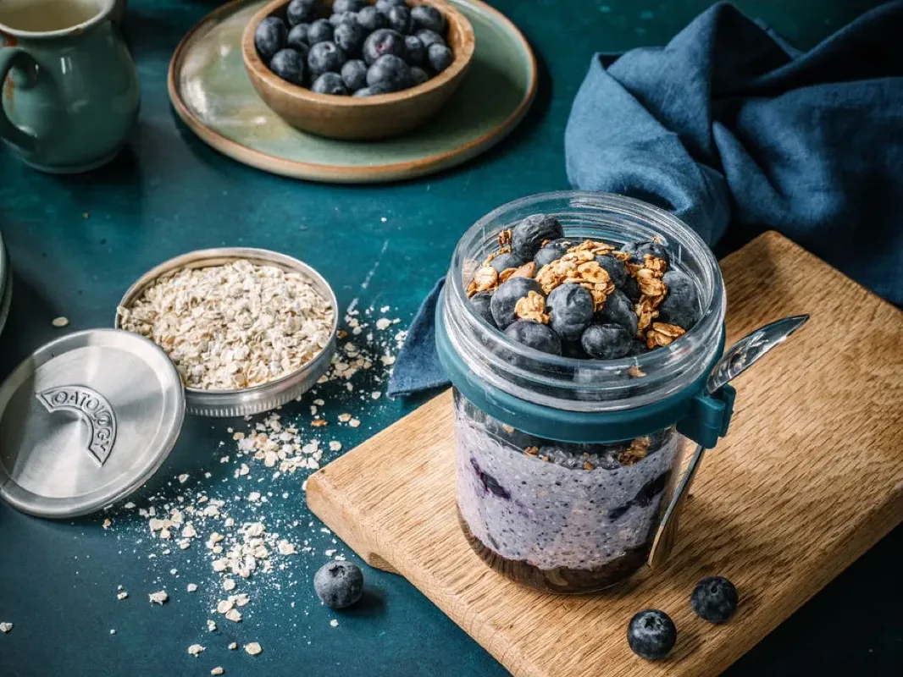
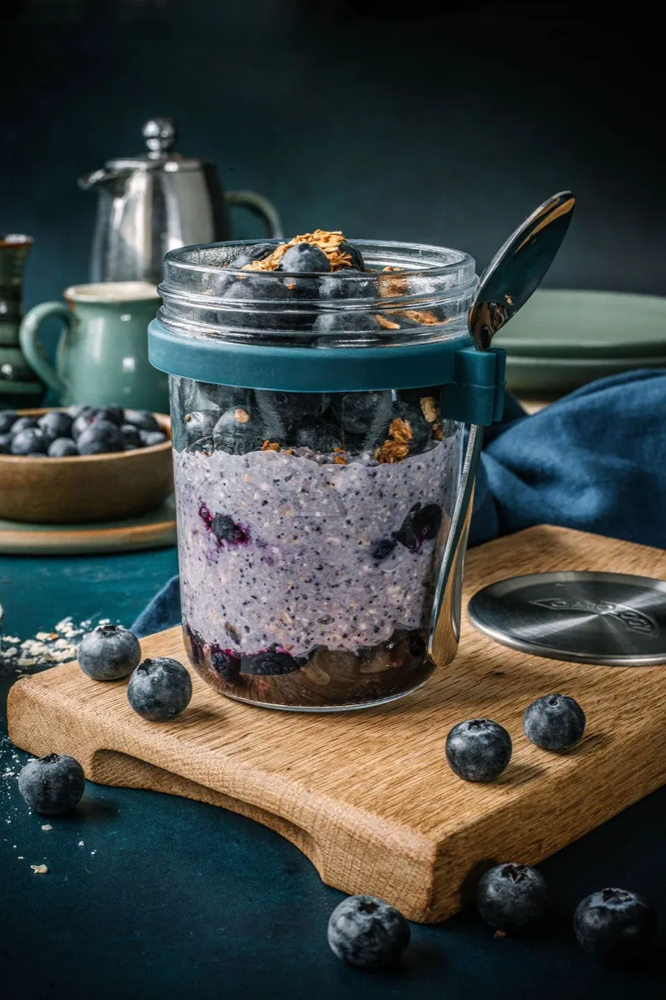
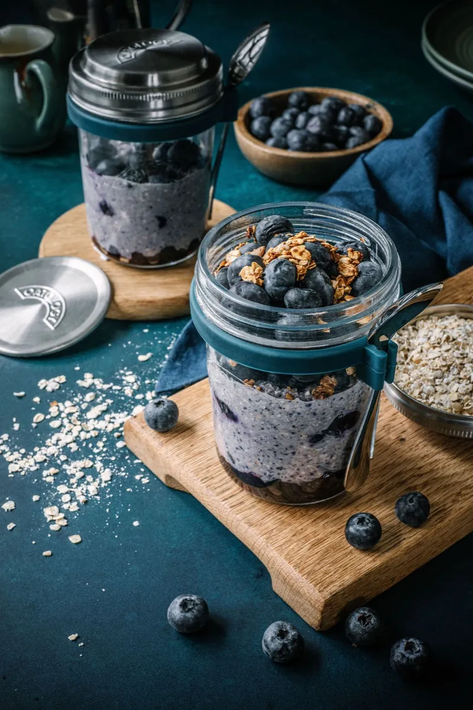
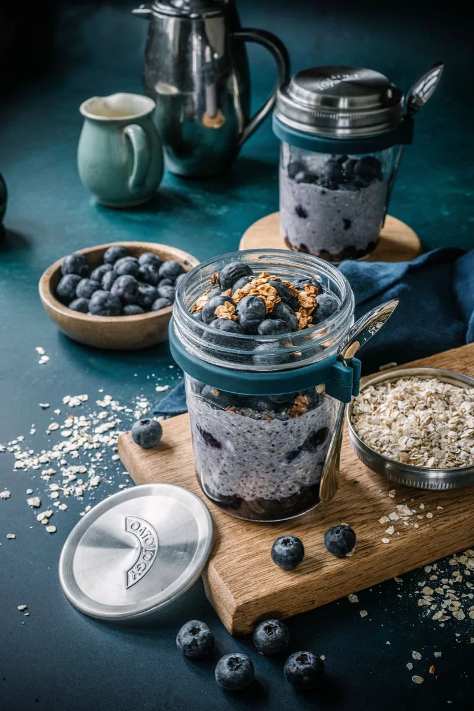

Blended Berry Overnight Oats
Blended berry overnight oats take about 10 minutes to prepare: blend 50g rolled oats, 150ml milk, 1 tbsp Greek yoghurt, honey or maple syrup, a pinch of salt, and a generous handful of frozen berries until smooth, then pour over a few blueberries and refrigerate overnight. By morning they are thick, creamy, and berry-bright, with no bits to chew. One jar comes to roughly 470 calories, with about 14g of protein and about 11g of fibre with the chia in.
This is the one recipe on the site that needs a blender. Everything goes in at once, whizzes to a smooth batter, and still sets overnight the way soaked oats do. That smooth, no-bits finish makes it the easy win for kids and anyone put off by the usual chew.

The recipe
Ingredients
- 50g / generous ½ cup rolled oats (one lid)
- 150ml / scant ⅔ cup milk of choice (to the milk line)
- 1 tbsp chia seeds (optional)
- 1 tbsp Greek yoghurt
- 1 to 2 tbsp honey or maple syrup, to taste
- A pinch of salt
- A generous handful of frozen blueberries, strawberries or raspberries (or a mix)
- Fresh blueberries, for topping
Method
- Add the rolled oats, milk, Greek yoghurt, chia seeds (if using), honey or maple syrup, salt, and a generous handful of berries to a blender.
- Blend on high until smooth and creamy, with a consistency similar to thick batter.
- Add a few fresh or frozen blueberries to the bottom of your jar.
- Pour the blended oat mixture over the blueberries and gently smooth the top.
- Cover and refrigerate overnight.
- Top with fresh blueberries.
Tips and variations
- More protein: add an extra tablespoon of Greek yoghurt or a small scoop of protein powder to the blender, with a splash more milk.
- Too thick: blended oats set firm, so loosen with a splash of milk in the morning and give it a stir.
- Feeling indulgent: blend in a spoonful of cocoa for a berry-chocolate version. We are not judging.
The jar we make it in
Every recipe on this site is written around the OATOLOGY jar: the lid measures the oats, the milk line measures the milk, and the sealed lid means it travels without leaking. No scales, no guesswork. Your own jar works too, anything sealable with room for a good stir.
Get the OATOLOGY jar on Amazon 2-pack, amazon.co.uk Weighing up options? Our honest guide to overnight oats jarsYour questions, answered
How long do blended berry overnight oats last in the fridge?
Blended berry overnight oats last up to 3 days in a sealed jar in the fridge, kept at 5°C or below (the Food Standards Agency's recommended fridge temperature). Because they are blended, the colour deepens over the days rather than the texture changing. Add the fresh blueberries on top each morning.
Why do you blend the oats for blended berry overnight oats?
Blended berry overnight oats are whizzed smooth for a reason: blending breaks the oats and berries into a thick, even batter with no bits to chew, closer to a mousse than to soaked oats. That smooth finish wins over kids and anyone put off by the usual texture. It still sets firm after 8 hours.
Are blended berry overnight oats just a smoothie?
Blended berry overnight oats are not a smoothie, even though they start in a blender. A smoothie is drunk straight away, thin and cold. This mixture is poured into a jar and left for 8 hours, where the oats swell and the batter sets into a thick, spoonable breakfast you eat, not sip.
Can you make blended berry overnight oats vegan?
Blended berry overnight oats are not vegan as written, since they use Greek yoghurt and honey. To make them vegan, swap in 1 tbsp of plant yoghurt (coconut or soya blend smoothest) and use the maple syrup rather than honey, with any plant milk. The 150ml quantity and overnight set stay exactly the same.
Are blended berry overnight oats good for you?
Blended berry overnight oats are a proper breakfast rather than a health product: roughly 470 calories with about 14g of protein and 11g of fibre when made with semi-skimmed milk and 1 tbsp of honey. The oats and chia carry the fibre, the berries add colour and vitamin C. Numbers shift with your milk and sweetener.
A closer look


